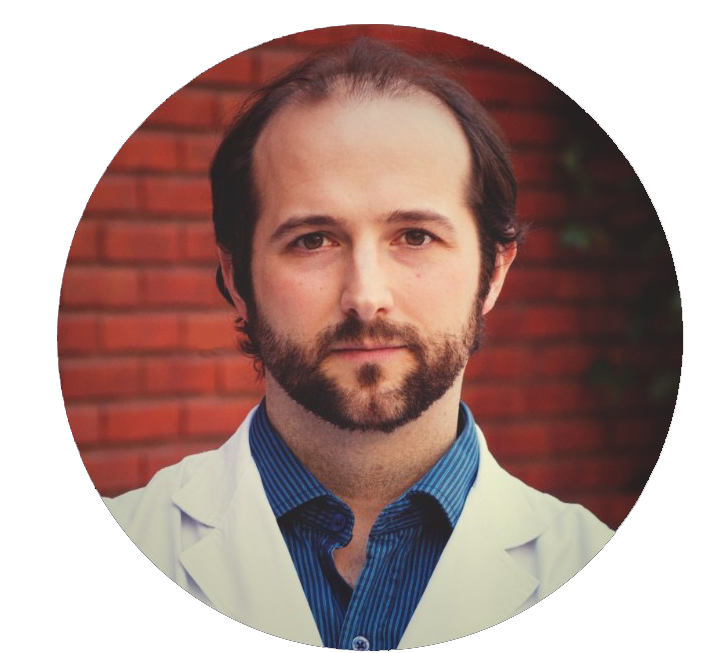
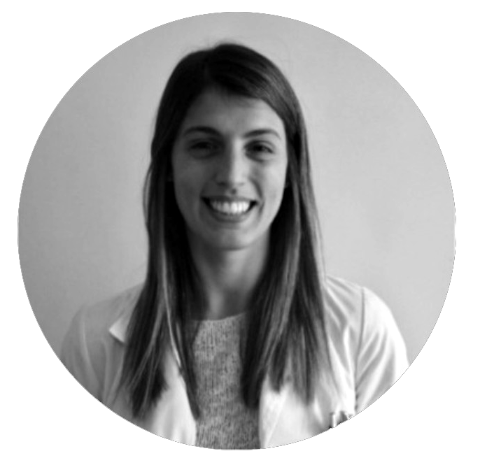
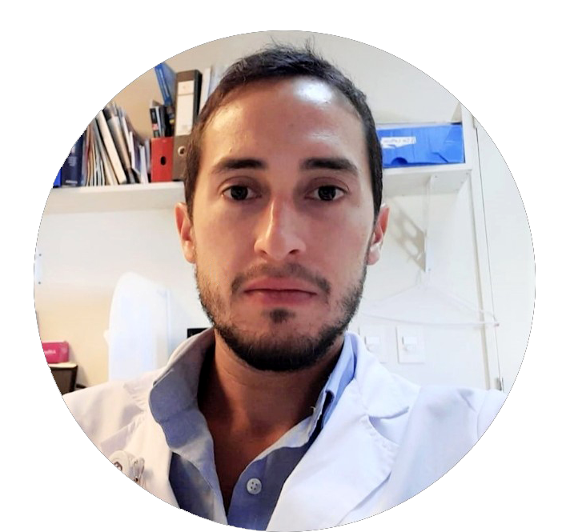

Nuestro equipo
Gutierrez Carlos - mn : 141.809
- Médico (UBA).
- Especialista en Neurología.
- Ex Residente de Neurología, Hospital Ramos Mejía.
- Neurólogo de Planta del Hospital general de agudos Dr. Enrique Tornú
- Miembro titular de la Sociedad Neurológica Argentina (SNA)
- Formación en Neurología Cognitiva como Médico asistente en la Unidad de enfermedades Neurocognitivas. Servicio de Neurología. Hospital General de Agudos José María Ramos Mejía
- Colaborador Docente. Servicio de Neurología Hospital Enrique Tornú
Perfil Linkedin
Nuestro equipo
Matías Javier Ale - mn : 137.234
- Médico Neurólogo.
- Especialista en Neurología Vascular.
- Médico Especialista en Medicina Legal.
- Neurólogo titular de la Unidad de ACV del Hospital J. M. Ramos Mejía.
- Fellowship en Neurología Vascular – Fleni.
- Carrera de Especialista en Neurología – Facultad de Medicina de la Universidad de Buenos Aires.
- Certificación de especialista en Neurología por la Sociedad Argentina de Neurología.
- Vocal titular de la Comisión Directiva de la Sociedad Neurológica Argentina.
- Miembro del Grupo de Trabajo de Enfermedades Cerebrovasculares de la Sociedad Neurológica Argentina.
- Miembro de la World Stroke Organization.
- Miembro de la European Stroke Organization.
- Miembro de la Sociedad Iberoamericana de Enfermedades Cerebrovasculares (SIECV).
- Miembro de la Alianza Joven Latinoamericana contra el ACV (ALATAC).
- Carrera Docente y Docente Adscripto en Neurología – Facultad de Medicina de la Universidad de Buenos Aires.
- Diplomatura en ciencia del envejecimiento cardiovascular y cerebrovascular – Academia Nacional de Medicina.
- Ex - Jefe de Residentes de Neurología - Hospital General de Agudos J.M. Ramos Mejía.
- Residencia de Neurología - Hospital General de Agudos J.M. Ramos Mejía.
Perfil Linkedin

Nuestro equipo
Manin Analisa - mn : 149.778
- Médica Neuróloga- Especialista en Enfermedades Neuroinmunológicas.
- Médica del Centro Argentina de Neuroinmunología (CADENI) de la Facultad de Medicina-UBA.
- Fellowship en Neuroinmunología en la Sección de neuroinmunología del Hospital J.M. Ramos Mejía, sede del Centro Argentino de Neuroinmunologia de la Facultad de Medicina-UBA.
- Ex Becaria de Investigación del Ministerio de Salud. GCBA. Sección Neuroinmunologia. División Neurología. Hospital Gral. de Agudos José María Ramos Mejía.
- Carrera de Especialista en Neurología – Facultad de Medicina de la Universidad de Buenos Aires.
- Ex Residente y Jefa de Residentes de Neurología, Hospital Ramos Mejía.
- Docente Adscripto y Ayudante de Primera de Neurología, Facultad de Medicina, UBA y Ex Ayudante Farmacología I y II, Facultad de Medicina, UBA.
- Coordinadora de la Diplomatura Universitaria en Neuroinmunología en la Universidad Católica Argentina (UCA).
- Secretaría de Redacción de la Revista Autoinmunidad.
- Miembro titular del grupo de trabajo de Enfermedades Desmielinizantes de la Sociedad Neurológica Argentina.
Perfil Linkedin

Nuestro equipo
Mauricio Paez Maggio - mn : 153.446
- Neurólogo especialista en Movimientos Anormales. Atención de pacientes con Enfermedad de Parkinson y otros trastornos del movimiento, realizando a su vez prácticas como aplicación de toxina botulínica y cirugía de estimulación cerebral profunda entre otras.
- Médico Neurólogo – Especialista en Movimientos Anormales.
- Fellowship en Movimientos Anormales – FLENI.
- Carrera de Especialista en Neurología – Facultad de Medicina de la Universidad de Buenos Aires.
- Miembro del grupo de trabajo de Movimientos Anormales de la Sociedad Neurológica Argentina.
- Miembro de la International Parkinson and Movement Disorder Society (MDS).
- Ex Jefe de residentes de Neurología - Hospital General de Agudos J. M. Ramos Mejía.
- Residente de Neurología - Hospital General de Agudos J. M. Ramos Mejía.
Perfil Linkedin
